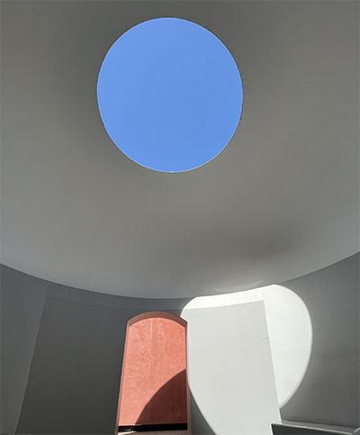
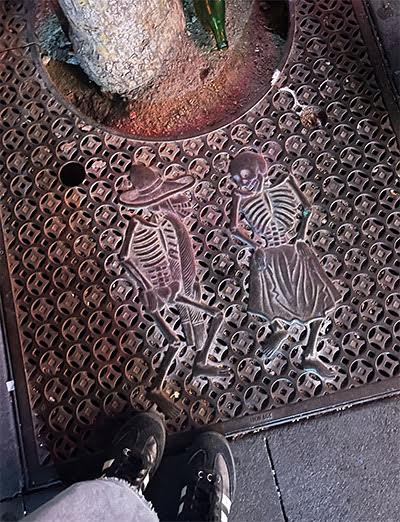

Come take a Scroll Though my Phone!
Social media can be straining to one's mental health. To avoid negitive feelings of internet poison, try to fill your social media feeds with friends, art, and fun facts! :0
My favorite thing about my phone is the camera! I love to capture pictures of things that make me smile (or squirm)





This is one of my favrite Instagram pages that posts cool pieces of furnature from FaceBook Marketplace.
"Do you have games on your phone?"
Yes I do. It's sudoku.

I love my friends and I love to show it!
I also use my phone to keep in touch with others, obviously. Here are some recent highlights!